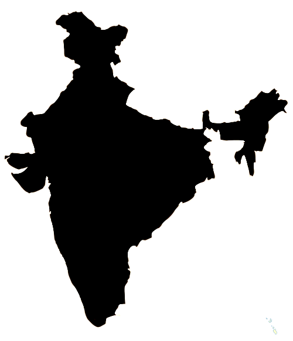

This plugin operates in two modes, admin and display. The admin mode enables user to create hotspots on desired HTML elements. The display mode is used for only displaying the hotspots to the end user. The design of the hotspot created are fully customizable. User can add their own CSS class to style the hotspots.
Example - Display mode
Hover over the spots

Example - Admin mode
Interactivity: click

Interactivity: none